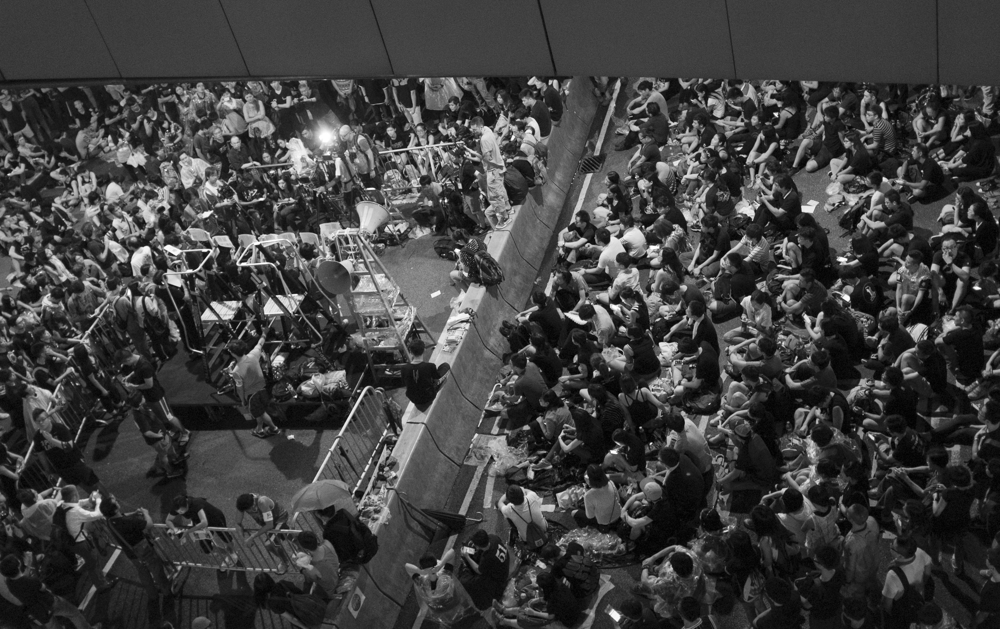
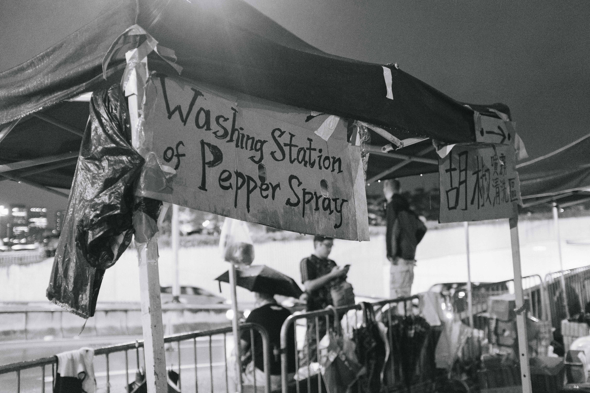

HK
My friends and I went to Hong Kong during the historical Umbrella Revolution. On arrival, we immediately went to the financial district to see what exactly was happening. Living in China, and even with the help of NYU Shanghai's VPN, it was still hard to get a sense of what exactly was going down in Hong Kong and for one who has never gone to or immersed themselves in a protest before, it was something that was going to be both eye-opening and exciting. What follows is a series that documents the overall atmosphere of Hong Kong during the time and also a modern day fight for a legitimate democracy.
Let's start!
The crowds were immense, and I think I can say in full confidence that I could call this a sea of people. At least a large lake. What's more impressive with the amount of people was the amount of organization present.
